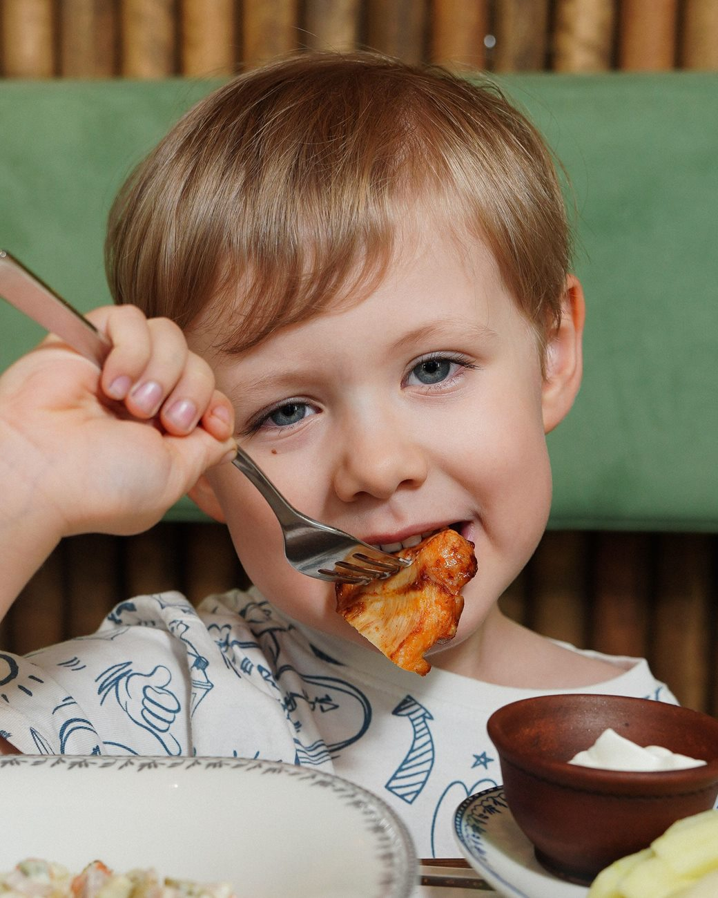
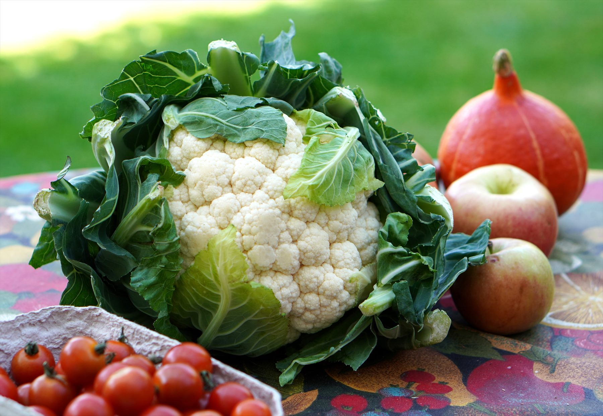
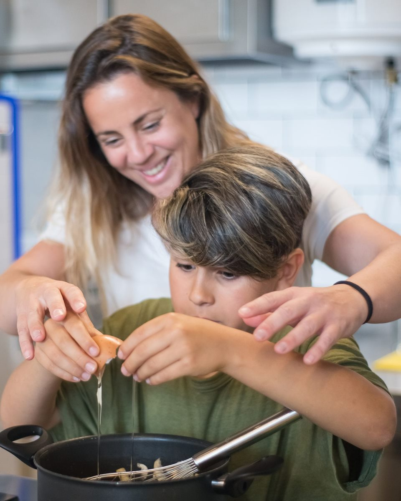
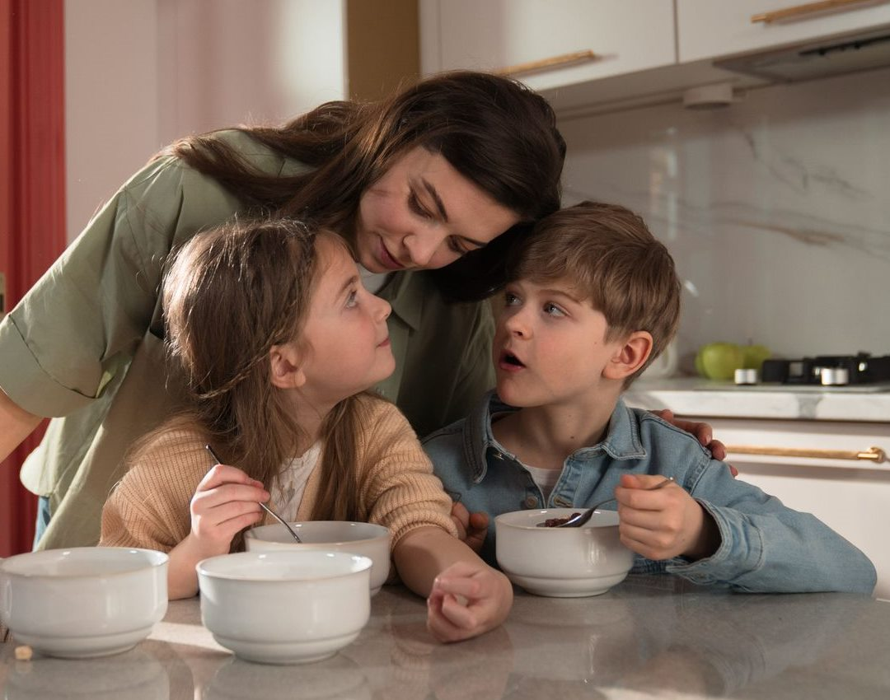

Ещё ложечку за маму
Что слышит ребёнокЕда — это долг, который нужно отдать
Пять шагов к спокойным обедам, если ребёнок отказывается от половины меню
↓Листайте вниз
Ещё ложечку за маму
Не доешь — не встанешь из-за стола
Съешь суп — получишь конфету
Каждая фраза сказана с любовью. Но учит она совсем не тому, чему мы хотим научить.
Чем сильнее мы настаиваем, тем чаще ребёнок отвечает отказом. Давление чаще усиливает сопротивление, чем снимает его.
Итог: за столом напряжение, а еда становится поводом для спора.
Итог: за столом спокойно, а у ребёнка появляется свой интерес к еде.
Идея называется разделением ответственности в кормлении (Эллин Саттер). Это не вседозволенность: взрослый задаёт рамки, а ребёнок учится слышать собственный голод и сытость.

Рядом с новым продуктом на тарелке лежит то, что ребёнок точно ест.
Новое кладём отдельно, в маленькой порции. Не гора, а проба.
Не просим, не торгуемся и не хвалим слишком громко.
Не съел — тарелку убираем спокойно, без комментариев и замечаний.
Предлагаем снова через несколько дней. Привыкание идёт не за один раз.
Ну хоть кусочек!
Это на столе, если захочешь
Выбор остаётся за ребёнком, а значит, исчезает повод сопротивляться.
Смотри, как это вкусно!
Хрустит. Как думаешь, что внутри?
Интерес вместо оценки: говорим о цвете, звуке и форме, а не о вкусе.
Не съешь — ничего не получишь
Кухня закроется после ужина
Спокойное правило вместо угрозы: ребёнок знает, чего ждать.

Не нужно делать всё сразу. Отметьте то, что уже получается, и выберите один пункт на завтра.
Отметки сохраняются на этом устройстве. Никуда не отправляются.
Общий стол, одно время, простые правила. Сначала меняем обстановку, а не ребёнка.
Как вводить незнакомые продукты, чтобы они не становились поводом для спора.
Гости, детский сад, бабушки и сладкое: что делать, когда правила нарушают другие.
Разбираем, что сработало, и собираем свои семейные правила на одном листе.
Ребёнок решает, будет ли есть. Вы решаете, что и когда будет на столе.
Общий стол и предсказуемый порядок работают лучше хитростей и угроз.
Не получилось сегодня — предложите снова через несколько дней, без упрёков.

Выберите сегодня один пункт из чек-листа. Остальное придёт по мере привыкания.